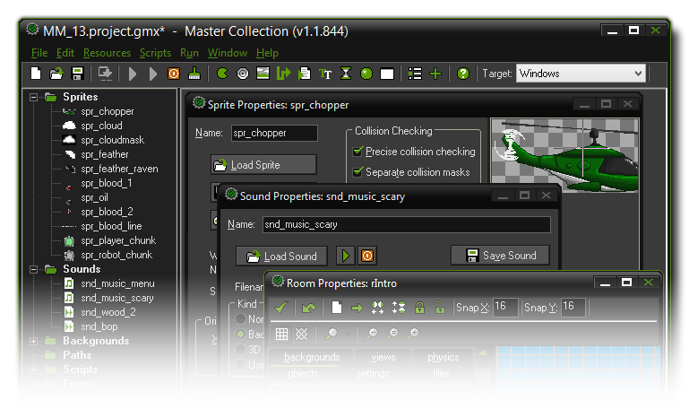

Introduction 介绍
GameMaker:Studio一篇介绍。
我们都喜欢玩电脑游戏，但是很多人没有意识到自己来设计游戏给别人玩更能享受到乐趣！现在，制造电脑游戏并不是普普通通简单的事情，当前市售的商业游戏往往需要 10到50人的团队耗费2至3年的开发并且预算动辄百万美元，且不提这些人都是高学历的精英：程序员、美工、音效师等等。
但是 GameMaker:Studio 的出现改变了这个事实，使用GameMaker:Studio 你能从原型开始，快速且容易地开发你自己的游戏，无需去钻研一门编程语言。
GameMaker:Studio 提供直观易于使用的拖放式动作类（以下称为DnD）图标让你立即开始游戏制作，你能导入并建立图片、声音作为对象使用，然后点击一个按钮马上就能看到动作的结果，我们知道，你想要尽快地开始制作，所以GameMaker:Studio 集成了精灵、背景和声音等功能，导入资源后可以直接展开工作。精灵被设计用作“占位符”的形式而并不用在任何一个完成的作品中。提醒一下，GameMaker:Studio 着重于2D游戏的制作，（不是说它不能制作3D，确实已经可以了）许多大制作仍然使用2D的动画特效，甚至它们玩起来非常有3D的感觉。
We all know that playing computer games is fun. But what many people don't realise is that it is actually more fun to design your own computer games and let other people play them! Now, making computer games is not normally a simple thing and the commercial games you buy nowadays typically take two or three years of development with teams of anywhere between 10 and 50 people and budgets that can easily reach millions of dollars. Not to mention the fact that all these people are highly experienced: programmers, art designers, sound technicians, etc.
But that's changed with the advent of GameMaker:Studio. With GameMaker:Studio you can start to prototype and create your own computer games quickly and easily without the absolute need to learn a programming language.
GameMaker:Studio offers an intuitive and easy to use Drag-and-Drop (referred to as 'DnD' from now on) interface of action icons that allow you to start on creating your own games very quickly. You can import and create images and sounds to use in objects, and then instantly see the results of your actions at the press of a button. Obviously, you want to get started as quickly as possible, so GameMaker:Studio is bundled with a considerable collection of sprites, backgrounds and sounds which you can import and use to get straight to work. These sprites are designed as "place holders" to get you going but they are not for use in any finished product. It should be noted here that GameMaker:Studio focuses on two-dimensional games, (which isn't to say that it's not capable of 3D, as it is!) and many great games use 2D sprite technology, even though they look very 3D when playing.

如上所述，你需要将图片（精灵）或其它转变为对象，通过DnD动作按钮定义属性和行为，和背景及其它东西一起照你想要的方式放置在房间里。游戏便发生在房间(room)里，本质上可以看作是游戏的画面层。如果精通DnD界面，了解如何控制对象里的内容， 你可以转去学习简单的GML编程语言， 在GameMaker:Studio 的不同层面，学习更多的控制方式。
这篇帮助文档会告诉你 GameMaker:Studio 大部分你需要知道的重要内容，你能用它创建自己的游戏。请认识这一点， 即使有GameMaker:Studio 这样的软件，设计游戏并不是完全毫不费力的去说给我做一键制作“MMORPG”的按钮吧！要知道制作游戏还有很多方面，玩法、图像、声音、用户界面等等…但是，一切的一切，最重要的是耐心。虽然GameMaker:Studio 是一个强大的工具，它也不能让你只是通过触摸一个按钮就能做好所有的事情，所以从小的例子开始，你会意识到不仅做游戏是种莫大的快乐，学会使用 GameMaker:Studio 去做游戏也是受益匪浅。
更多的信息、例子、教程、想法以及有用的论坛网址和其它好的站点，请点击下面的网站。
很快的你会自学成才，成为游戏制作大师，享受这份经验吧。
As mentioned previously, you need to assign images (sprites) and other things to objects, which are easily defined in your game through the DnD action icons to give them properties and behaviour, after which you place them in rooms along with backgrounds and other things to give your game the look and feel you want. It's in these rooms that the game takes place, and they can be considered essentially as "levels" to your game. If you master the DnD interface and how it works to control basic things in objects, you can then move on to the easy to learn programming language GML which gives you much more control over every aspect of GameMaker:Studio.
This help file will tell you the most important things you need to know about GameMaker:Studio and how you can create your own games with it. Please realize that, even with a program like GameMaker:Studio, designing computer games is not completely effortless - so no "make me an MMORPG" button here! Be aware too that there are many aspects to making games that are all equally important: game-play, graphics, sounds, user interaction, etc... but, the most important aspect of all, is patience. While GameMaker:Studio is a powerful tool, it cannot do everything for you at the touch of a button so start small with simple examples and you will realize that not only is creating games great fun, but that learning to use GameMaker:Studio to do it is also very rewarding!
For more information, examples, tutorials, ideas and links to helpful forums and other great sites, check out the website
Soon you will become a master GameMaker yourself. Enjoy the experience!
-断水- 参考了部分zpw759的GM帮助翻译稿。